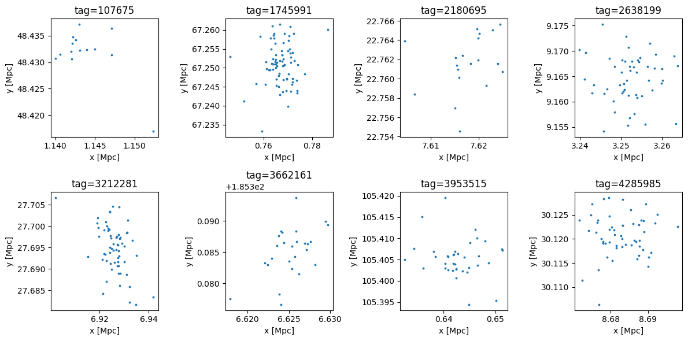
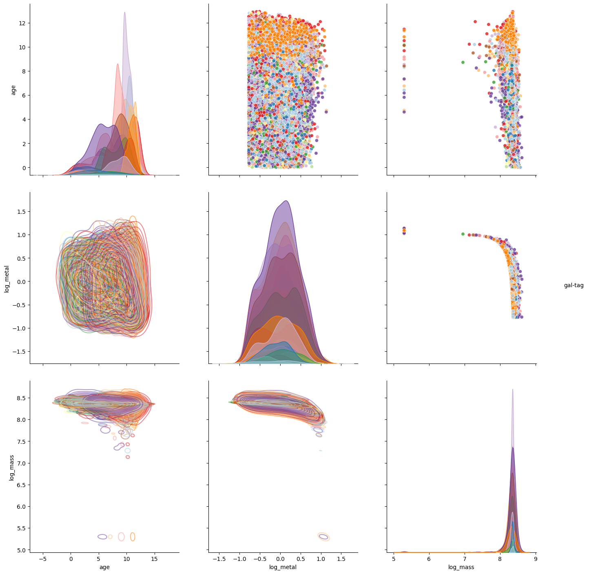
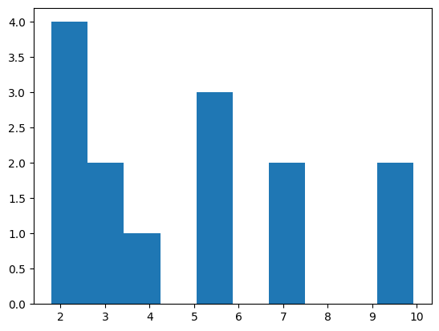
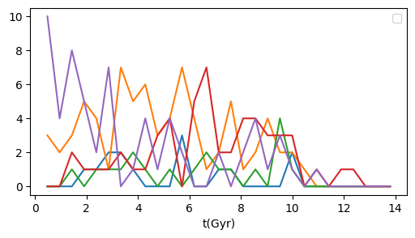

particle_file_path = "/lcrc/project/cosmo_ai/nramachandra/Projects/Hydro_paint/Data/fromFE/haloparticles_2gpc.hdf5"
dirIn0 = "/lcrc/project/cosmo_ai/nramachandra/Projects/Hydro_paint/Data/fromSciDAC/128MPC_RUNS_HACC_5PARAM/reformat/"
dirIn1 = "KAPPA_2.127_EGW_0.479_SEED_7.143e5_VKIN_3794_EPS_9.752/output/"
dirIn2 = "step_624/"
dirIn3a = "galaxyparticles/"
dirIn3b = "galaxyproperties/"
particle_file_path = os.path.join(dirIn0, dirIn1, dirIn2, dirIn3a, "m000p-624.galaxyparticles.hdf5")
catalog_file_path = os.path.join(dirIn0, dirIn1, dirIn2, dirIn3b, "m000p-624.galaxyproperties.hdf5")
# ########################################################
# print(f"Particle file path: {particle_file_path}")
# print(f"Catalog file path: {catalog_file_path}")
# collection = load_opencosmo_collection(particle_file_path, catalog_file_path)
# print(collection)
# gal_properties = collection["galaxy_properties"]
# star_particles = collection["star_particles"]
# print(star_particles.data.columns)
# print(gal_properties.data.columns)
# # ##########################
# halo_ids_select = [35324, 268404180]
# gal_tags_select = gal_properties.filter(oc.col('fof_halo_tag').isin(halo_ids_select)).data["gal_tag"].data
# ##########################
# # gal_tags_select = gal_properties.data["gal_tag"][30: 32]
# print('Selected galaxy tag: ', gal_tags_select)
# star_particles = read_particles_in_a_galaxy(
# particle_file_path=particle_file_path,
# catalog_file_path=catalog_file_path,
# unique_gal_tags=gal_tags_select)
# print(star_particles.columns)Module: Loading HACC stellar catalog
Importing the stellar catalogs compiled from HACC. This module may be edited for a different file reader if necessary.
The entries in the current stellar catalog are:
[fof_halo_tag, if_satellite, galaxy_tag, stellar_idx, metallicity, mass, age, x, y, z, vx, vy, vz]
- galaxy_tag: Tags to galaxies given in the HACC datasets
- stellar idx: Unique ID for individual particles
- metallicity: Fraction of the metals in the stellar particles (Not rescaled by Zsun)
- mass: Mass of the stellar particle in Msun units
- age: Age of the stellar particles in 1/H0 units
- x, y, z: Particle positions in Mpc/h units
- vx, vy, vz: Velocity of the particles
load_hacc_galaxy_data
load_hacc_galaxy_data (fileIn:str='/home/runner/work/watercolor/watercolo r/watercolor/data/test_hacc_stellar_catalog/Gal_Z0 .txt', Z_solar:numpy.float32=0.019, H0:numpy.float32=71.0)
| Type | Default | Details | |
|---|---|---|---|
| fileIn | str | /home/runner/work/watercolor/watercolor/watercolor/data/test_hacc_stellar_catalog/Gal_Z0.txt | Input galaxy catalog file from HACC hydro sim |
| Z_solar | float32 | 0.019 | Solar metallicity |
| H0 | float32 | 71.0 | Hubble constant |
| Returns | tuple | galaxy_tag, stellar_indices, metallicity, mass, age, x, y, z |
load_opencosmo_collection
load_opencosmo_collection (particle_file_path:str=None, catalog_file_path:str=None)
| Type | Default | Details | |
|---|---|---|---|
| particle_file_path | str | None | Path to the OpenCosmo particle file |
| catalog_file_path | str | None | Path to the OpenCosmo catalog file |
| Returns | StructureCollection | OpenCosmo particle collection |
read_particles_in_a_galaxy
read_particles_in_a_galaxy (particle_file_path:str=None, catalog_file_path:str=None, unique_gal_tags:list=None)
| Type | Default | Details | |
|---|---|---|---|
| particle_file_path | str | None | Path to the HDF5 file containing particle data |
| catalog_file_path | str | None | Path to the OpenCosmo catalog file |
| unique_gal_tags | list | None | Unique identifier for the halo to filter particles |
| Returns | Dataset | OpenCosmo dataset containing particles of a specific halo |
load_hacc_galaxy_data_opencosmo
load_hacc_galaxy_data_opencosmo (particle_file_path:str=None, catalog_file_path:str=None, Z_solar:numpy.float32=0.019, H0:numpy.float32=71.0)
| Type | Default | Details | |
|---|---|---|---|
| particle_file_path | str | None | Input galaxy catalog file from HACC hydro sim |
| catalog_file_path | str | None | Path to the OpenCosmo catalog file |
| Z_solar | float32 | 0.019 | Solar metallicity |
| H0 | float32 | 71.0 | Hubble constant |
| Returns | tuple | galaxy_tag, stellar_indices, metallicity, mass, age, x, y, z |
# fof_halo_tag, if_satellite, gal_tag, stellar_idx, metal, mass, age, x, y, z , vx, vy, vz = load_hacc_galaxy_data()
fof_halo_tag, if_satellite, gal_tag, stellar_idx, metal, mass, age, x, y, z , vx, vy, vz = load_hacc_galaxy_data_opencosmo(particle_file_path=particle_file_path,
catalog_file_path=catalog_file_path)Number of available haloes in the catalog: 43087
Number of available haloes selected: 200
Loaded 19118 particles from 241 galaxies in 200 haloes tags = np.unique(gal_tag).astype(int)
n_tags = 8 # len(tags)
tags = tags[:n_tags] # Limit to first n_tags for testing
ncols = min(4, n_tags)
nrows = -(-n_tags // ncols) # integer ceiling without math.ceil
fig, axes = plt.subplots(nrows, ncols, figsize=(3*ncols, 3*nrows))
axes = np.atleast_2d(axes)
for i, gal_tag_selected in enumerate(tags):
r, c = divmod(i, ncols)
ax = axes[r, c]
gal_tag_cond = np.where(gal_tag == gal_tag_selected)
ax.scatter(x[gal_tag_cond], y[gal_tag_cond], s=3, alpha=1.0)
ax.set_title(f'tag={gal_tag_selected}')
ax.set_xlabel('x [Mpc]')
ax.set_ylabel('y [Mpc]')
for j in range(i+1, nrows*ncols):
r, c = divmod(j, ncols)
axes[r, c].axis('off')
plt.tight_layout()
plt.show()
def scatter_subset(x, y, hue, mask, **kws):
sns.scatterplot(x=x[mask], y=y[mask], hue=hue[mask], **kws)plt.figure(figsize=(10, 10))
df = pd.DataFrame(np.array([gal_tag, age, np.log10(metal + 1e-5), np.log10(mass)]).T, columns=['gal-tag', 'age','log_metal','log_mass'])
df1 = pd.DataFrame(np.array([age[gal_tag_cond], np.log10(metal + 1e-10)[gal_tag_cond], np.log10(mass)[gal_tag_cond]]).T, columns=['age','log_metal','log_mass'])
df_all = pd.concat([df.assign(dataset='all'), df1.assign(dataset='tag-select')])
g = sns.PairGrid(df, hue="gal-tag", palette = "Paired", diag_sharey=False)
# g.map_lower(scatter_subset, mask=df["gal-tag"] == np.unique(gal_tag)[0])
g.map_upper(scatter_subset, mask=df["gal-tag"] != 0, alpha=0.8, legend=False)
g.map_lower(sns.kdeplot, alpha=0.5, levels=10, legend=False, fill=False)
g.map_diag(sns.kdeplot, fill=True, legend=False, warn_singular=False, alpha=0.5)
g.add_legend()
g.fig.set_size_inches(15,15)<Figure size 1000x1000 with 0 Axes>
plt.hist(age[np.where(gal_tag == np.unique(gal_tag)[0])])(array([4., 2., 1., 0., 3., 0., 2., 0., 0., 2.]),
array([1.79797363, 2.61048746, 3.42300105, 4.23551464, 5.04802847,
5.8605423 , 6.67305613, 7.48556995, 8.29808331, 9.11059761,
9.92311096]),
<BarContainer object of 10 artists>)
plt.figure(figsize=(6, 3))
for gal_tag_idx in range(5):
print(f"gal_tag_idx: {gal_tag_idx}, gal_tag: {np.unique(gal_tag)[gal_tag_idx]}")
gal_tag_condition = np.where(gal_tag == np.unique(gal_tag)[gal_tag_idx])
h, b = np.histogram(age[gal_tag_condition], bins=np.linspace(0, 13.8, 30));
# plt.plot(b[1:], np.cumsum(h), label='cumulative binned')
# if (h.max() > 50):
plt.plot(b[1:], h)
# plt.yscale('log')
plt.xlabel('t(Gyr)')
plt.legend()gal_tag_idx: 0, gal_tag: 107675
gal_tag_idx: 1, gal_tag: 1745991
gal_tag_idx: 2, gal_tag: 2180695
gal_tag_idx: 3, gal_tag: 2638199
gal_tag_idx: 4, gal_tag: 3212281/lcrc/project/cosmo_ai/nramachandra/Projects/tmp/ipykernel_1934691/3070900267.py:15: UserWarning: No artists with labels found to put in legend. Note that artists whose label start with an underscore are ignored when legend() is called with no argument.
plt.legend()